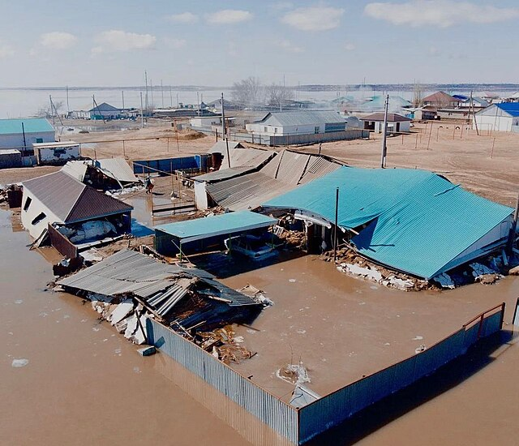
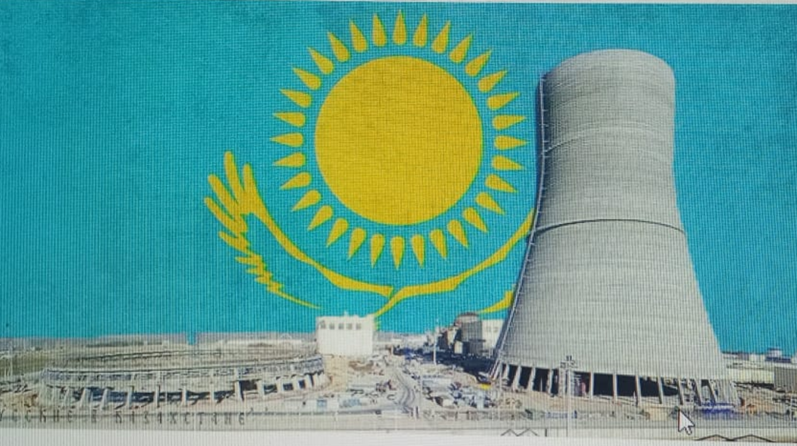
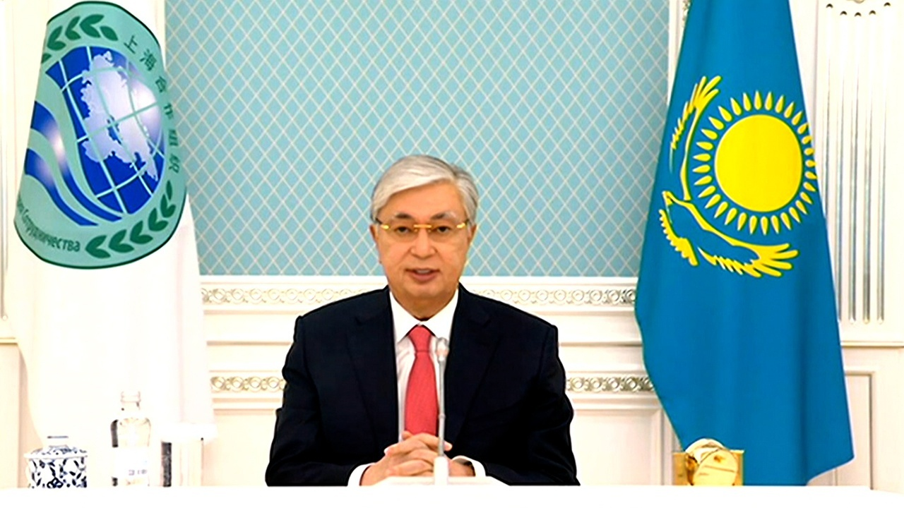

Крупнейшее наводнение: борьба с природной стихией
Весной 2024 года Казахстан столкнулся с сильнейшим
наводнением за последние десятилетия, затронувшим северные
и западные регионы. Масштаб бедствия вынудил эвакуировать
более 100 000 человек, а восстановление инфраструктуры стало
приоритетной задачей для государства.
Подробнее

Референдум: будущее атомной энергетики в Казахстане
6 октября прошел исторический референдум, на котором граждане
поддержали строительство первой атомной электростанции в поселке
Үлкен, близ озера Балхаш. Это решение стало важным шагом к снижению
углеродного следа и укреплению энергетической независимости страны.
Подробнее

Казахстан во главе ШОС: укрепление регионального сотрудничества
В декабре Казахстан председательствовал в Шанхайской организации
сотрудничества, активно участвуя в международных переговорах.
Были заключены важные соглашения, направленные на развитие экономических
и политических связей с соседними странами, что подчеркнуло роль Казахстана
как ключевого игрока в регионе.
Подробнее